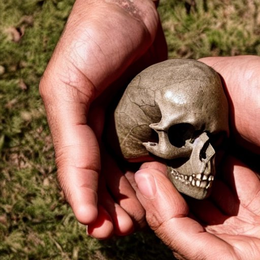

Lembitu pealuu

-2 500 000 $
Lembitu pealuu on muistne rauaaegne reliikvia, mis arvatakse olevat kuulunud võimsale Eesti pealikule. See muljetavaldav pealuu avastati väidetavalt 1950. aastatel Eestist Lembitu arheoloogilisest leiukohast ja arvatakse, et see kuulus muistse eesti rahva legendaarsele juhile. Kolju ise on väga hästi säilinud ning seda kaunistavad keerukad nikerdused, mis arvatakse olevat loodud Lembitu elu ja tegude mälestuseks. See on ainulaadne killuke Eesti ajaloost ning meenutab muistse eesti rahva väge ja mõju.
×